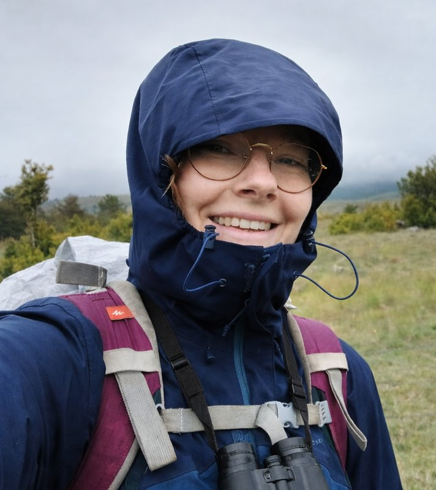
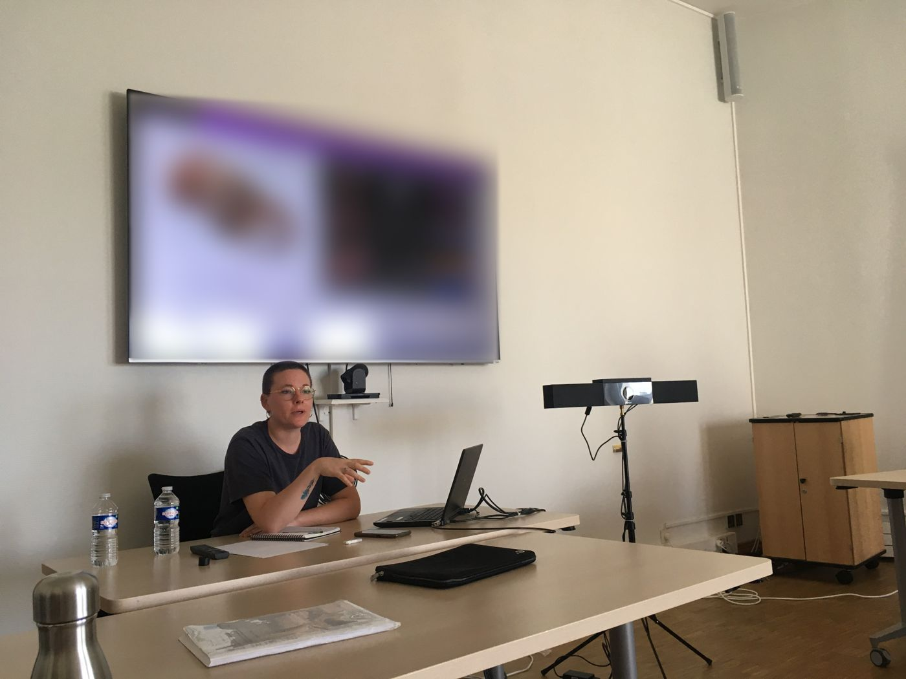
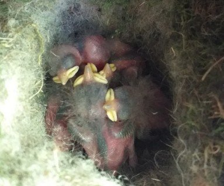
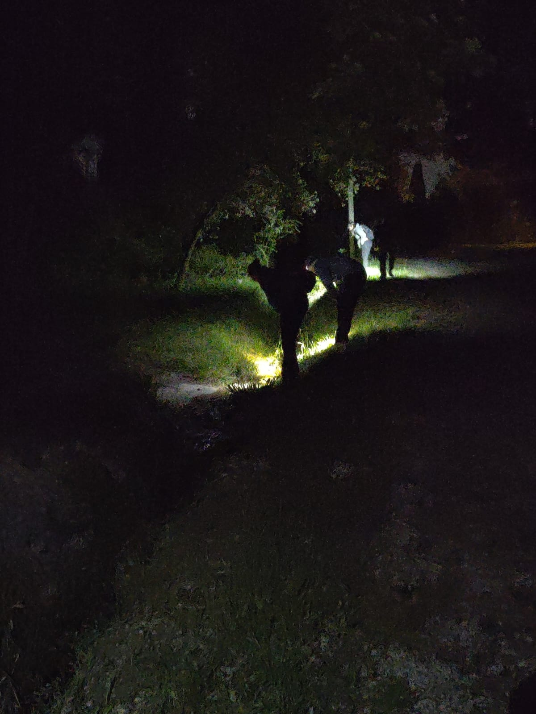
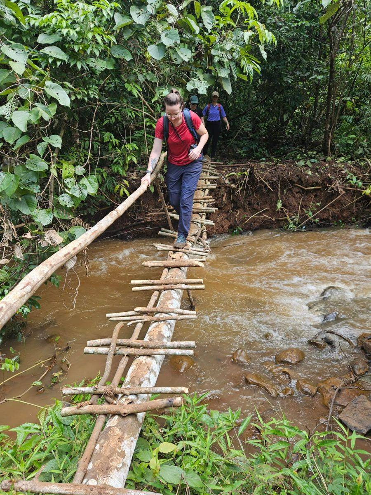

Ingénierie écologique
Écologue avec une expérience dans la mise en place de protocoles, le suivi d'espèces et l'analyse de données écologiques, je souhaite mettre mes compétences au service de projets d'écologie appliquée et de bureaux d'études.
Compétences clés
- Inventaires naturalistes
- Suivi de populations
- Séquence ERC
- Réglementation environnementale
- Observations comportementales
- Conception de protocoles
- Coordination de missions terrain
- Pièges photographiques
- Cartographie (QGIS)
- Analyse de données (R, Python, Excel)
- Rédaction & synthèse
- Permis B & véhiculée
Mon parcours en ingénierie écologique
Cliquez sur une catégorie pour n'afficher qu'elle, puis à nouveau pour tout revoir. Survolez un élément de la frise pour en voir le détail. Frise complète sur la page CV.
- L3 Écologie
- M1-2 Écologie
- Mésanges
- Doctorat MNHN
- Terrain Cambodge
- Le Chêne
- CNER
- BEBOP & Vienne Nature
- Projet CROA
- LPO Hérault
- IA pour écologues
- Diagnostic écologique
Détails de ma formation
10/2026
Méthodes et outils de diagnostic écologique en milieux terrestres
06/2026
Training course « AI for ecologists: a toolkit »
12/2024
Doctorat en Sciences de la Nature et de l’Homme : Évolution et Écologie
12/2021
Master Écologie et Biologie des Populations
10/2018
Licence Éthologie, Écologie et Évolution des Organismes
Ce que je peux apporter
De retour à Montpellier après mes années d'études, qui m'ont permis d'acquérir une bonne connaissance du fonctionnement des écosystèmes, je reste très mobile pour intervenir en région méditerranéenne comme ailleurs. Mon profil mêle la rigueur de la recherche et une pratique de terrain. Mon point fort au quotidien ? Transformer les données brutes en livrables limpides : de la recherche biblio approfondie aux analyses spatiales sous QGIS, j’aime rédiger des synthèses claires qui permettent de cerner vite les continuités écologiques et de cadrer efficacement le volet réglementaire de vos aménagements.
Mes connaissances
& compétences
Cliquez sur une bulle pour en voir le détail.
Cadre réglementaire & diagnostic écologique
Formée en octobre 2026 par le MNHN et l’OFB aux méthodes et outils du diagnostic écologique en milieux terrestres (21 h, attestation de compétences) : définition des enjeux, patrimonialité et statuts de protection, mobilisation critique des données existantes, choix des protocoles (pression d’inventaire, détectabilité, plan et périodes d’échantillonnage), structuration et dépôt légal des données naturalistes, restitution des résultats adaptée aux exigences réglementaires. Une méthode que je mets au service des études réglementaires :
Terrain & expertise naturaliste
En cours d’apprentissageInventaires et suivis d’espèces (avifaune, amphibiens), observations comportementales, conception et déploiement de protocoles. Titulaire du permis B et véhiculée, je suis disponible pour les visites de terrain, prospections et suivis de chantier sur toute l’Occitanie.
Mes expériences de terrainRédaction & bibliographie
ExpérimentéeAuteure d’articles scientifiques, d’une thèse et de synthèses techniques, j’ai l’habitude de produire des documents clairs, rigoureux et structurés. Rompue à la veille scientifique et à la synthèse bibliographique, je sais rechercher, analyser de façon critique et mobiliser la littérature et les données existantes pour étayer un diagnostic, avec une relecture attentive des pièces techniques et administratives avant transmission.
Données, cartographie & IA
ExpérimentéeAnalyse statistique (R, Excel), cartographie (QGIS), Python et machine learning, approfondis lors de la formation « AI for ecologists » de la FRB-CESAB : pour structurer les bases de données naturalistes et modéliser les impacts sur la biodiversité.

Communication & travail d’équipe
ExpérimentéeEnseignement universitaire, médiation scientifique et encadrement de stagiaire m’ont appris à vulgariser sans perdre en rigueur : supports visuels clairs, appui aux chefs de projet face aux collectivités et services instructeurs, comptes-rendus structurés pour suivre les arbitrages.
Mes expériences de terrain
Des montagnes pyrénéennes aux forêts du Cambodge : inventaires, suivis, collectes de données et travail en équipe, les missions qui ont forgé mon expérience du terrain.

Mission à la Station d'Écologie Théorique et Expérimentale de Moulis (Ariège). Encadrant : Maxime Cauchoix. Collecte et gestion de données biologiques, travail de terrain en équipe. Suivi de la reproduction des mésanges charbonnières et bleues, assistance à la capture d'individus, analyse de données issues de pièges photographiques.

Engagement associatif : naturalisme & conservation
- Associations naturalistes : sorties terrain et ateliers naturalistes (CNER, BEBOP, Vienne Nature) et, depuis 2026, engagement à la LPO Hérault.
- Science participative : Projet CROA (2026), inventaires d’amphibiens en milieu urbain et péri-urbain montpelliérain (CEFE-CNRS / Université de Montpellier), dans le cadre d’un programme de recherche participative visant à étudier et préserver ces populations.
- Centre de soins de la faune sauvage : soigneuse bénévole à temps plein au centre de sauvegarde Le Chêne (2017).

Suivi éthologique d’éléphants au Cambodge
Mission de terrain menée pendant la thèse : observations comportementales d’éléphants en milieu forestier et collecte de données en conditions réelles.
Disponible pour rejoindre une équipe
Basée à Montpellier, titulaire du permis B et véhiculée, je suis disponible pour des missions de terrain, prospections et suivis de chantier sur l’ensemble de l’Occitanie.